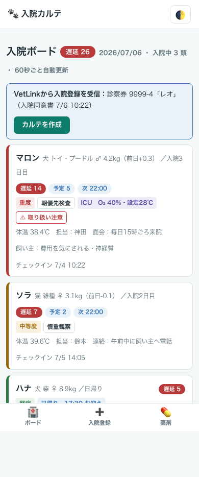
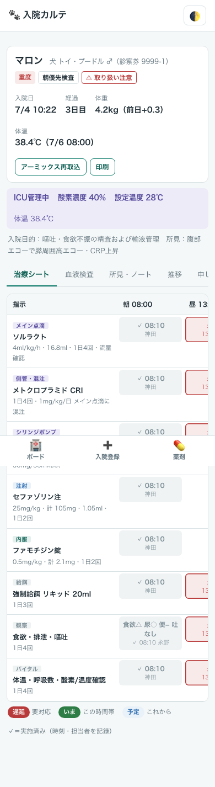
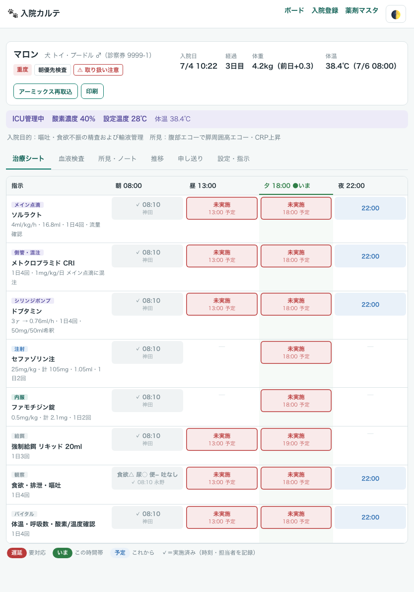
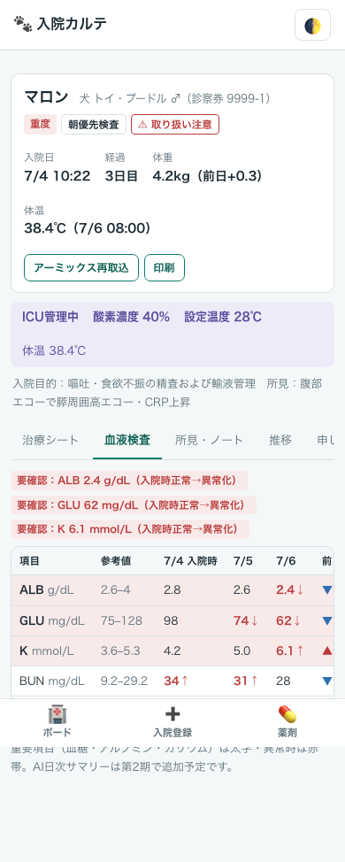
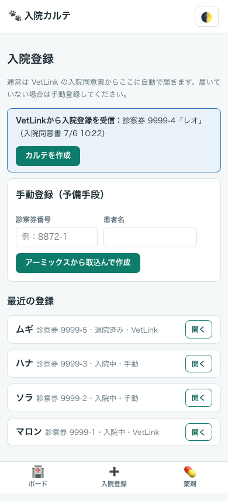
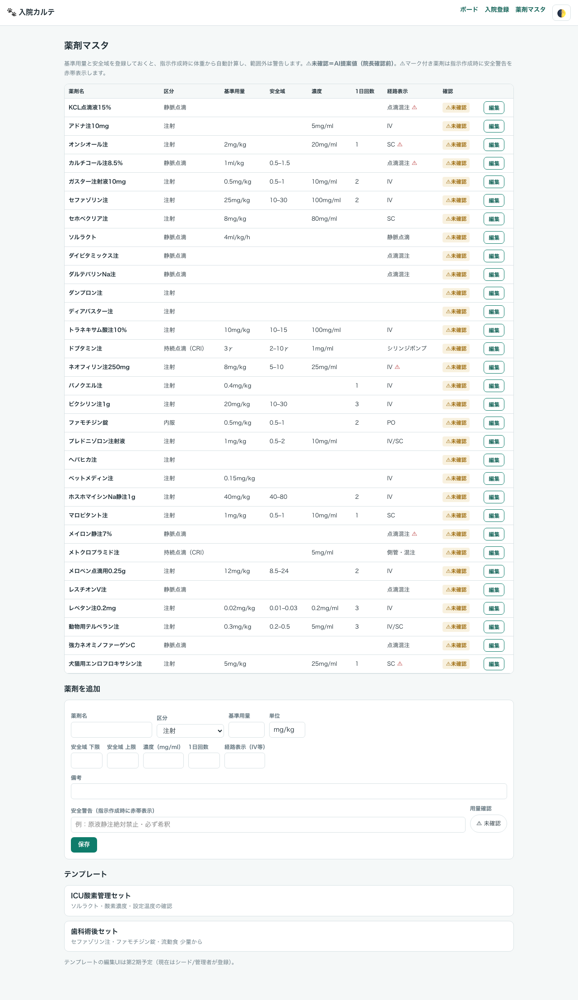

入院管理アプリ 使用ガイド
← ガイド一覧へ
獣医師・動物看護師向け ｜ 2026年7月6日版 ｜ 荻窪ツイン動物病院
30秒まとめ
入院中の子の
指示書・処置チェック・点滴/投薬・体温体重・血液検査を、1つの画面でみんなで管理するアプリです。指示はそのまま
チェック表になり、実施すると「
誰が・何時にやったか」が自動で残ります。
やり忘れは赤く浮き上がるので、投薬忘れ・処置忘れを仕組みで防げます。iPad・スマホ・PCのどれでも使えます（iPadが一番見やすいです）。
橙 = 受付・看護師
青 = 獣医師
緑 = 自動（AI・システム）
1. アプリを開く
最初にパスコードを入力します（院内で共有しているもの。分からなければ院長へ）。一度入れると同じ端末では約30日間は再入力不要です。
画面が見づらい夜間は、右上の 🌓 ボタンでダークモード（黒背景）に切り替えられます。夜のICU当番におすすめです。
2. 全体の流れ
① 入院登録
VetLink で入院同意書をもらうと自動でアプリに届きます（「カルテを作成」を押すだけ）。届いていない時は手動登録：診察券番号を入れて「アーミックスから取込んで作成」。
▼
② 自動：アーミックスから取込＋AI下書き
基本情報・体重・血液検査・カルテ（主観ノート）を自動で取り込み、AIが入院目的・所見・点滴・投薬の下書きを作ります。
▼
③ 獣医師：指示書を確定
薬剤を選ぶと体重から投与量を自動計算。テンプレート（歯科術後セットなど）で一括入力もできます。
▼
④ みんなで：治療シートで実施チェック
朝・昼・夕・夜の各時間帯にやることが並びます。実施したらセルをタップして記録（2タップ）。
▼
⑤ 退院処理
「設定・指示」タブから退院。日帰り入院はお迎え時刻も表示されます。
3. 入院ボードの見方（トップ画面）
開いた瞬間に「誰が入院していて、何が遅れていて、誰を先に診るべきか」が分かる画面です。60秒ごとに自動更新されるので、置きっぱなしの端末でも常に最新です。

▲ 入院ボード（画面の患者はすべて架空のサンプルです）
| 表示 | 意味 |
|---|
| カード左端の色帯 | 重症度タグ：赤=重度／黄=中等度／緑=軽症。重い子ほど上に並びます。 |
| 遅延 2 いま 1 次 22:00 | やり忘れの数（赤）・今の時間帯のタスク数・次の予定時刻。赤が出ていたら最優先で対応してください。 |
| ICU O₂ 40%・設定28℃ | ICU管理中の子の酸素濃度・設定温度。 |
| ⚠ 取り扱い注意／飼い主特記 | 「費用を気にされる」「神経質」など、対応時に知っておくべきこと。 |
| 面会・連絡 | 「毎日15時ごろ面会」「午前中に飼い主へ電話」など、事前の取り決め。 |
4. 治療シート（実施チェック）看護師獣医師
患者カードをタップすると、その子の入院カルテが開きます。指示が縦に、時間帯（朝8時・昼13時・夕18時・夜22時）が横に並びます。

▲ 治療シート（スマホ表示・架空データ）

▲ iPadなら朝昼夕夜が横スクロールなしで全部見えます
| セルの色 | 意味 |
|---|
| 未実施（赤） | 予定時刻を過ぎてもチェックされていない＝要対応。 |
| いま（緑） | 今の時間帯にやること。列全体も薄緑になります。 |
| 予定（青） | これから。 |
| ✓ 8:10 神田 | 実施済み（時刻と担当者が残ります）。 |
実施のしかた（2タップ）
- セルをタップ → 担当者名は前回の名前が自動で選ばれています（違えば選び直し）
- 「✓ 実施を記録」をタップ → 完了。間違えたら直後に出る「取り消す」を押せば戻せます
- 観察の行（食欲・排泄・嘔吐）は、食欲◯△×・尿・便・吐き気の有無を選ぶだけです。
- バイタルの行で体温を入れると、そのまま「推移」タブのグラフに反映されます（前日との体重差もヘッダに常時表示）。
- カルテがまだ書かれていない子は、ヘッダの「アーミックス再取込」を押すと最新のカルテ・検査を取り込み直せます。
5. 血液検査タブ獣医師
毎日の血液検査を自動で取り込み、前日からの増減と「入院時は正常だったのに悪化した項目」を自動で拾って赤帯で知らせます。血糖・アルブミン・カリウムなどの見落とせない項目は太字で強調されます。

▲ 血液検査タブ（架空データ）。上の赤帯が「要確認」の自動アラート
6. 入院登録と指示書づくり獣医師

▲ 入院登録（架空データ）。VetLinkから届いた子は青いバナーに出ます
- VetLinkで入院同意書をもらった子は自動でここに届きます。「カルテを作成」を押すだけ。
- 届いていない時は手動登録：診察券番号（例 1234-1）を入れて「アーミックスから取込んで作成」。
- 登録時に重症度タグ・ICU設定・面会/連絡の取り決め・飼い主特記（費用を気にされる／神経質／⚠取り扱い注意）を設定できます。
薬剤と投与量

▲ 薬剤マスタ。よく使う注射・点滴混注薬が登録済みです
- 薬剤を選ぶと体重から投与量を自動計算します（例：25mg/kg × 4.2kg = 105mg → 1.05ml）。安全域の外に出ると警告が表示されます。
- 点滴はメイン点滴／側管・混注／シリンジポンプの3系統を分けて指示できます。昇圧剤などはγ（マイクロ）から時間あたりの流量（ml/h）を自動計算します。
- 「⚠未確認」バッジ付きの薬剤は、院長がまだ用量を最終確認していないものです。使うときは投与量を自分でも必ず確認してください。
- KCLなどの危険薬は、選ぶと赤い安全警告（原液静注禁止など）が表示されます。必ず読んでください。
印刷：ヘッダの「印刷」で当日の指示書を紙に出せます。ネットワーク障害や停電時のバックアップとして使ってください。
7. よくある質問
| 質問 | 答え |
|---|
| 夜中や早朝も使えますか？ | 使えます。記録・チェック・閲覧は24時間動きます。アーミックスからの取込（登録・再取込）だけは受付PCが動いている日中のみです。 |
| カルテがまだ書かれていない子を登録したら？ | 血液検査と基本情報は入ります。カルテを書いたあとに「アーミックス再取込」を押せば、入院目的などのAI下書きが追加されます。 |
| 実施チェックを間違えて押した | 直後に出る「取り消す」ボタンで戻せます（約6秒間）。過ぎてしまったら獣医師または院長に連絡してください。 |
| 表示がおかしい・動かない | まず再読み込み。直らなければ院長へ（システムは3分ごとに自動監視・自動復旧しています）。 |
| 使いにくい・こうしてほしい | 改善リクエストはいつでも院長まで。すぐ直せることが多いです。 |
⚠ 患者情報の取り扱い：この画面には患者名・飼い主さんの情報が表示されます。院外で画面を開いたまま席を離れない・画面の写真をSNS等に載せないでください。（このガイドの画像はすべて架空のサンプルです）